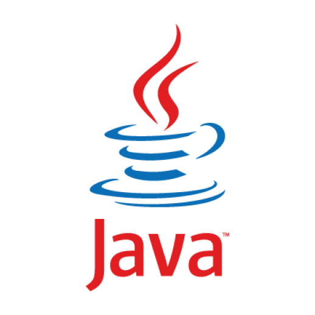
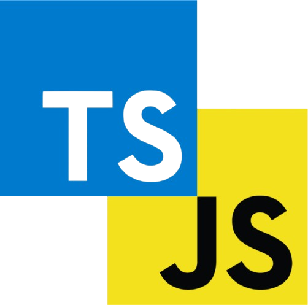
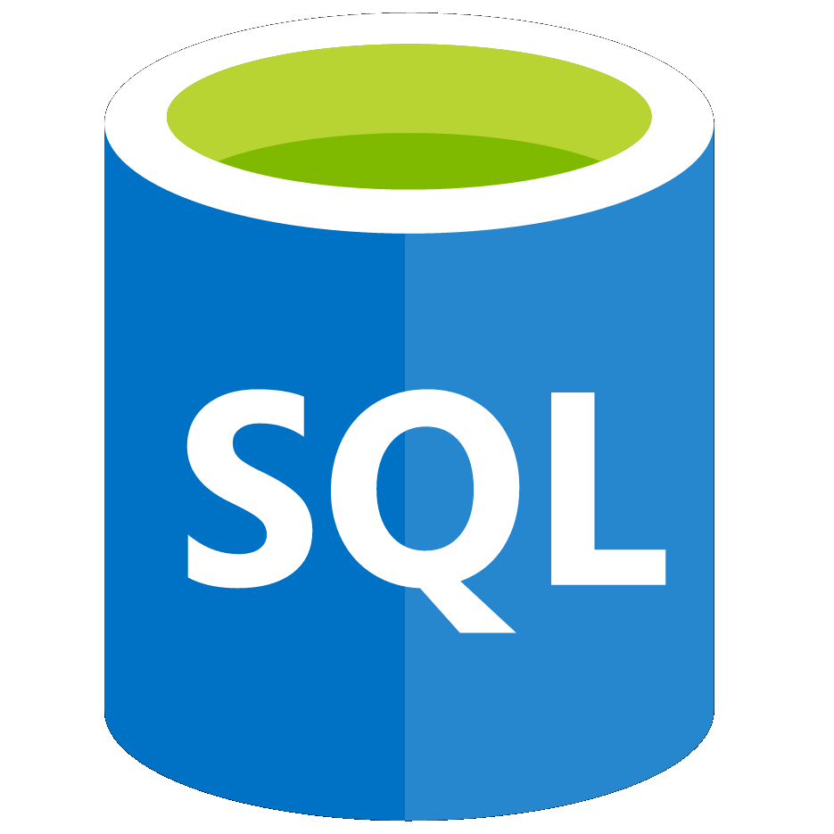

Linguagens e Tecnologias
Aqui, listo as principais tecnologias com as quais possuo conhecimento e experiência prática, aplicadas no desenvolvimento de lógicas de programação, estruturação de dados e gerenciamento de ambientes e servidores.
Clique na opção que desejar para ser redirecionado para a página com projetos contendo a tecnologia específica.



